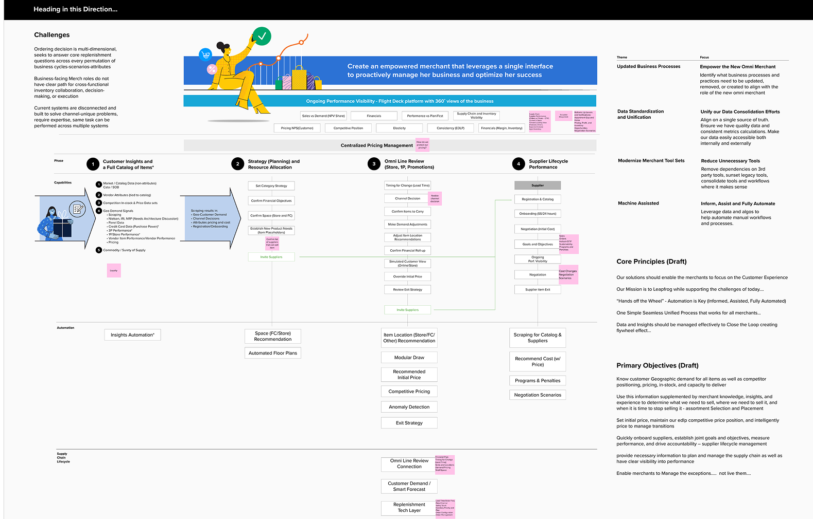
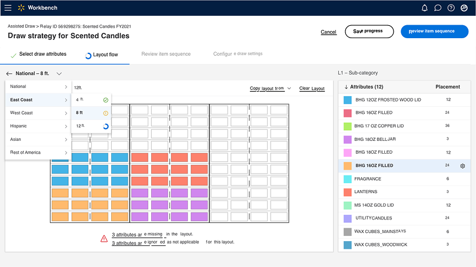
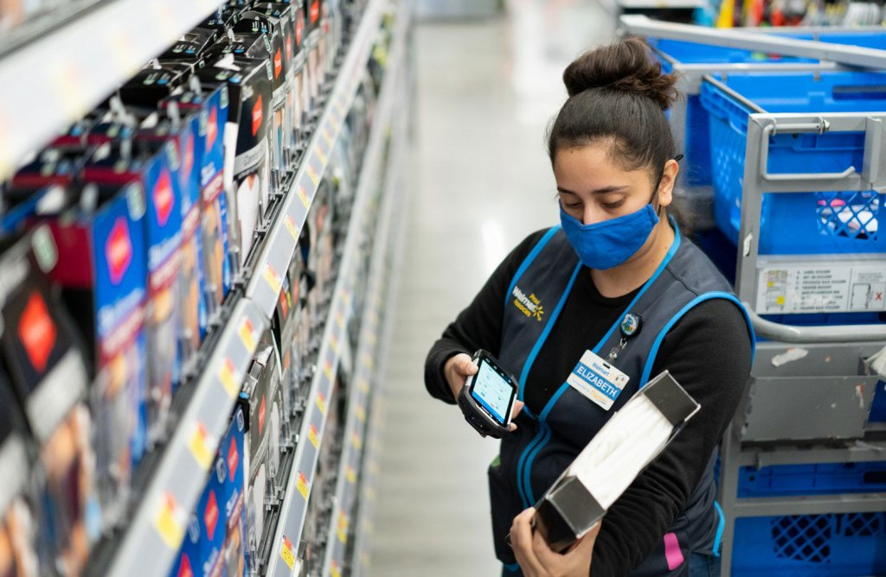

Assortment & Merchandising Platform Transformation
Redesigning how Walmart's buyers plan, price, and position product across physical and digital retail at enterprise scale
The Challenge
Walmart's retail advantage depends on getting assortment right — the right basket of goods, at the right price, in the right channel. I joined as the final addition to the team conceived to be the Indian extension of the core team — the fourth design leader in the box, working under Valerie Casey, with accountability for the assortment and merchandising design workstream. When I joined, that entire system was held together by merchant expertise, spreadsheets, and manual coordination across fragmented teams.
As ecommerce accelerated during COVID, those limitations became a business-critical failure point. Buyers were making pricing and placement calls without real-time inventory or demand data. The scale and speed required for digital retail had outgrown the infrastructure supporting it.
Investigation revealed the profound interdependence of all influencing factors — demand, supply, pricing, and logistics. You couldn't design one without understanding all the others. The mandate wasn't to digitize broken processes. It was to redesign how merchandising decisions get made at enterprise scale.

Merchandising infrastructure: fragmented systems, manual coordination, decision latency

Before: spreadsheet-driven workflows with no real-time data visibility
Key Decisions
Rather than digitizing existing processes, I reframed the design problem: the bottleneck wasn't the workflow—it was information access. Buyers were making consequential decisions blind. I designed the platform to surface the right data at the point of decision, then let the workflows emerge from that visibility.

Assortment Management Dashboard: real-time signals surfaced at the point of decision
I designed workflows that let buyers make assortment decisions based on product relationships, placement strategy, and operational dependencies—not just individual SKUs in isolation. This adjacency-aware approach unlocked more coherent decision-making across categories.

Price optimization interface: factors driving recommendations made visible and overrideable
One of the structural problems was that in-store and ecommerce assortments operated in silos. I contributed to aligning these into shared operational systems, reducing fragmentation and enabling buyers to think across channels rather than sequentially.

Strategic framework: aligning physical and digital merchandising operations
This wasn't a UI modernization project. Changing the interface changed what decisions were possible and who could make them. I designed with the organizational model in mind—altering buyer responsibilities, approval structures, and how merchandising teams coordinated across functions.
The Work
We acted through design sprints — integrating disparate data into streamlined tools and sequencing information for buyers in the order they actually needed to make decisions. Three core decision interfaces formed the platform's foundation:
Assortment Management Dashboard
Buyers needed to manage which products to carry across regions, categories, and seasons — with real-time demand and inventory signals. I designed a data surface that started macro (what's trending, what's at risk, what's out of stock) and allowed confident drill-down without losing context. The goal was to collapse coordination cycles that had stretched to weeks into decisions that could happen in days.
Price Optimization Interface
Pricing had to respond to demand, competitor pricing, and inventory — in near real-time. My design made the reasoning visible: what factors drove the recommendation, what confidence level the system had, and how to override with a logged rationale. The goal was a tool that augmented buyer judgment rather than replacing it.
Approval Workflows
Enterprise governance required multi-stakeholder approval on merchandising changes. I designed clear approval hierarchies, emergency fast-track paths for crisis decisions, and notification systems that actually drove action. Every step's status was visible across the chain.

Buyer workflow interface: approval hierarchies, decision trails, and status visibility

Results and performance visibility: closing the loop between decisions and outcomes
The Results
Merchant time savings and manual touchpoint reduction — 10% fewer manual interventions across the assortment workflow
Additional operational savings through space optimization and consolidation (shared attribution)
Time for final assortment calls reduced from 3–5 weeks to a remarkable 1.5 weeks
Workflows adopted by thousands of Walmart buyers and merchandisers across channels
What Made It Notable
- Design influencing organizational structure — The platform didn't just change tools. It changed buyer roles, approval models, and how merchandising teams coordinated. That kind of impact only happens when design engages with the org model, not just the interface.
- Bridging physical and digital retail — In-store and ecommerce assortments had operated as separate systems for years. Contributing to a unified model across both tracks required understanding each deeply enough to design for the seams between them.
- High-stakes systems thinking under crisis — Built during COVID-driven ecommerce acceleration, when the cost of slow merchandising decisions was measured in billions and speed wasn't optional.

The physical reality behind the platform: buyers using the assortment system to manage what lands on these shelves — from planning through fulfillment